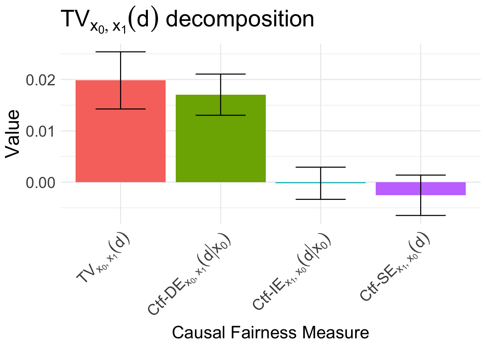
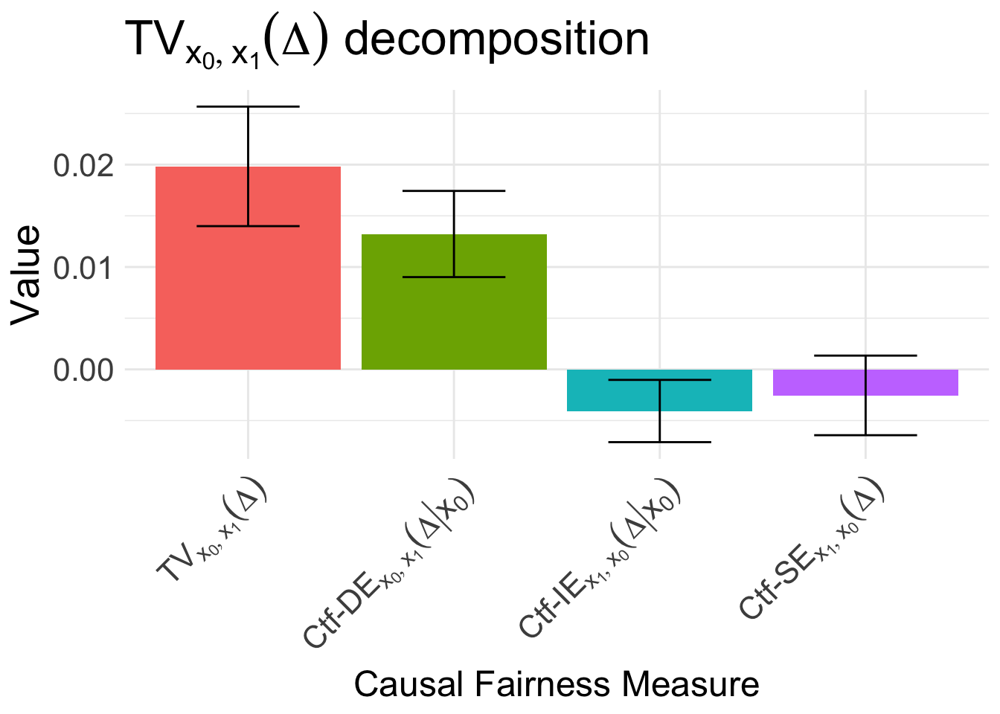
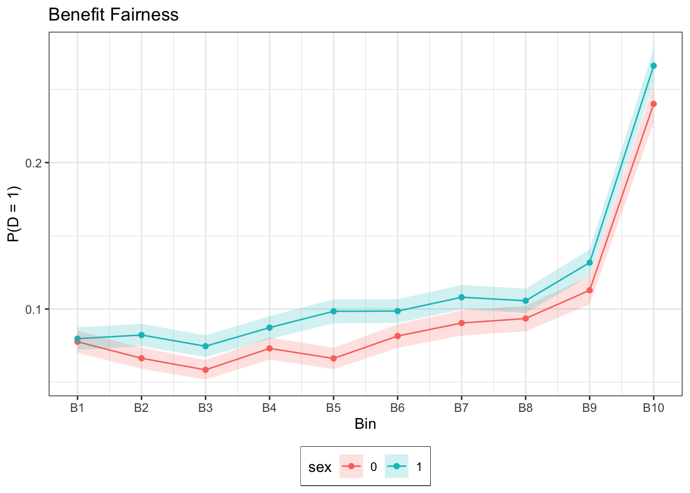

We consider the cohort of all patients in the database admitted to the ICU. Patients who are mechanically ventilated immediately upon entering the ICU are subsequently removed. By focusing on the time window of the first 48 hours from admission to ICU, for each patient we determine the earliest time of mechanical ventilation, labeled \(t_{MV}\). Since mechanical ventilation is used to stabilize the respiratory profile of patients, for each patient we determine the average oxygen saturation in the three-hour period \([t_{MV}-3, t_{MV}]\) prior to mechanical ventilation, labeled O\(_2\)-pre. We also determine the oxygen saturation in the three-hour period following ventilation \([t_{MV}, t_{MV}+3]\), labeled O\(_2\)-post. For controls (patient not ventilated at any point in the first 48 hours), we take the reference point as 12 hours after ICU admission, and calculate the values in three hours before and after this time. Patients’ respiratory stability, which represents the outcome of interest \(Y\), is measured as follows:
\[\begin{align}
Y := \begin{cases}
0 \text{ if O}_2\text{-post} \geq 97, \\
-(\text{O}_2\text{-post}-97)^2 \text{ otherwise}.
\end{cases}
\end{align}\]
Values of oxygen saturation above 97 are considered stable, and the larger the distance from this stability value, the higher the risk for the patient. We also collect other important patient characteristics before intervention that are the key predictors of outcome, including the SOFA score, respiratory rate, and partial oxygen pressure (PaO\(_2\)).
Constructing the SFM
We next construct the Standard Fairness Model, with also a decision \(D\):
Fair Decisions can be obtained by passing the data, SFM, and any transform functions of the potential outcome \(Y_{d}\) (po_transform argument) to the fair_decisions() function:
# fit the outcome control modelresp_oc <-fair_decisions( data, X = X, Z = Z, W = W, Y = Y, D = D, x0 =0, x1 =1,po_transform =function(x) ifelse(x <97, -(x-97)^2, 0), po_diff_sign =1)
Note that in faircause 0.2.0 the columns of the input data to functions fair_decisions() and fair_predictions() need to be either numeric or integer. Use one-hot encoding wherever appropriate.
When constructing fair decisions, xgboost is first used to estimate the conditional average treatment effect (CATE) of \(D\) on \(Y\), labeled \(\Delta\), also referred to as benefit:
In the above, resp_oc is S3-class object of type fair_decision. We can use the autoplot() generic to analyze various important aspects of the decision making process:
# inspect the decomposition of Dautoplot(resp_oc, type ="decision")

# inspect the decomposition of Deltaautoplot(resp_oc, type ="delta")

# inspect benefit fairnessautoplot(resp_oc, type ="benefit_fairness")

Further generics can be applied to fair_decision objects, such as predict(), which allows us to get estimates of the benefit \(\Delta\) on some test data, and also find the optimal policy that satisfies benefit fairness:
# make predictions on testtest_data <- datafair_dec <-predict(resp_oc, newdata = test_data, budget =0.2)# inspect the estimate benefit \Deltahead(fair_dec$delta, n = 100L)